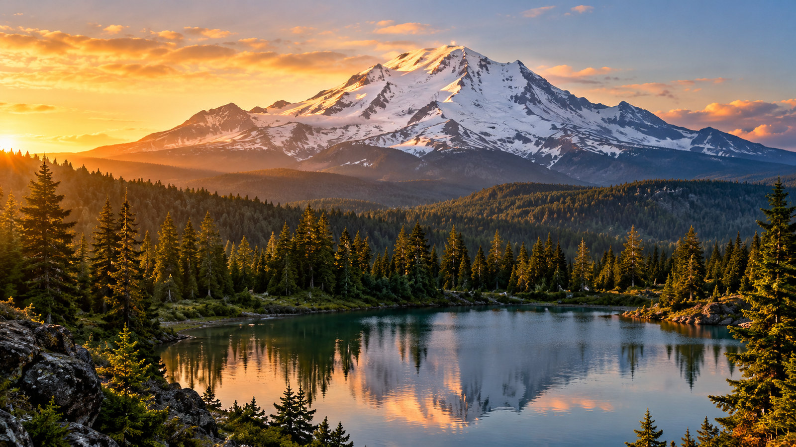
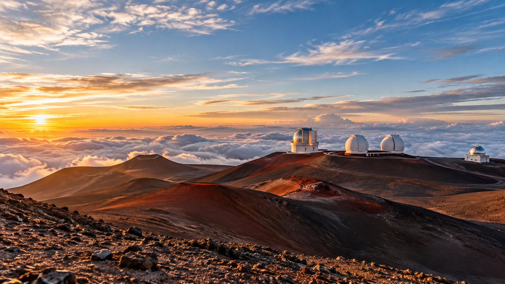
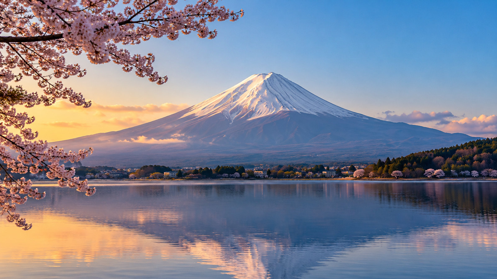
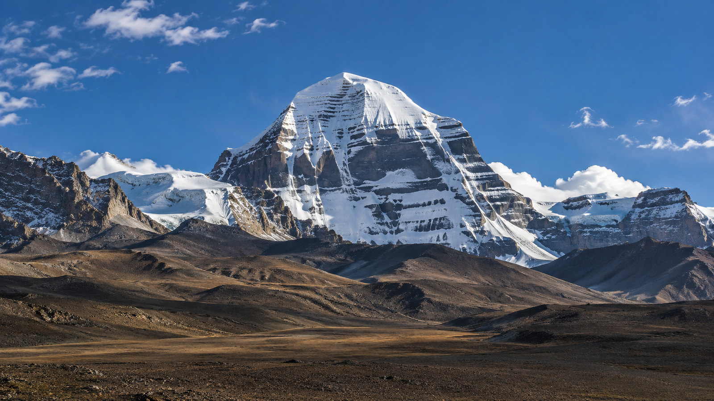
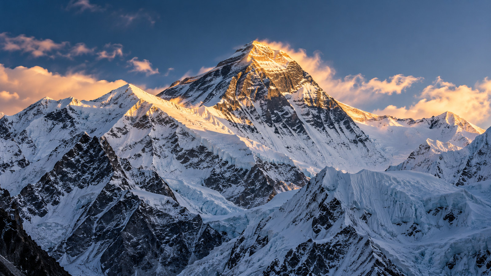
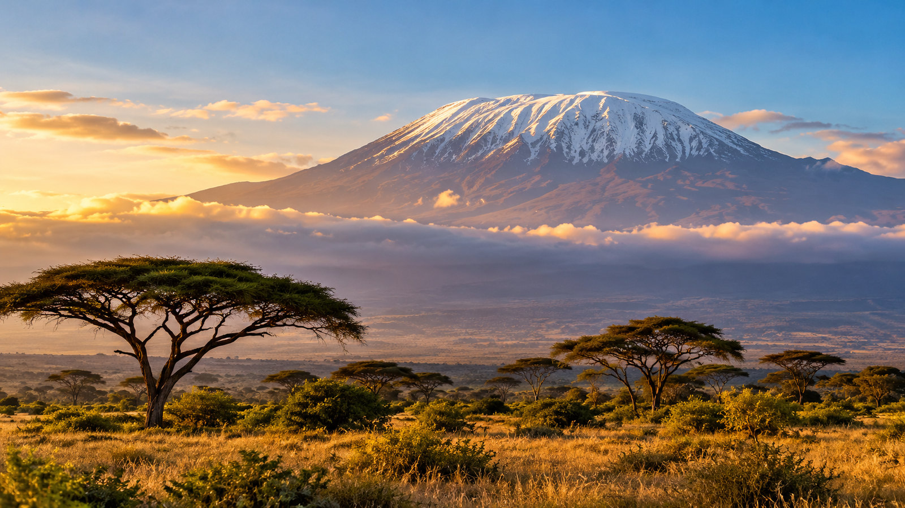
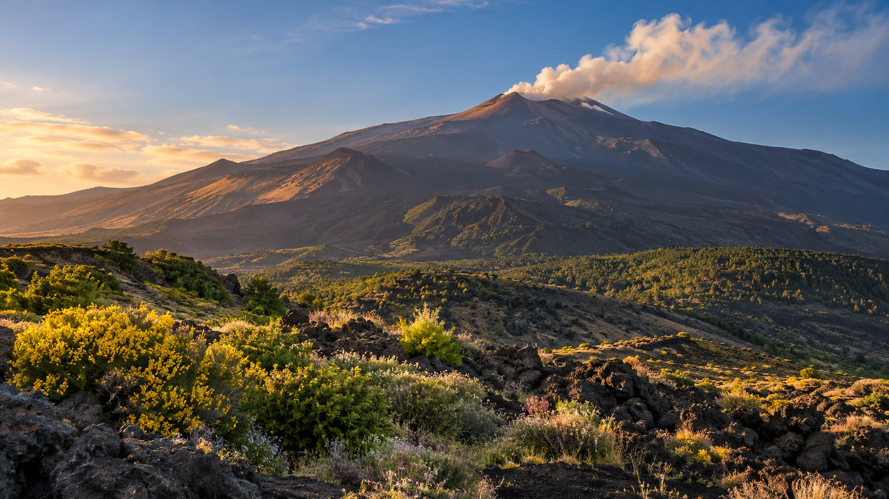

There are mountains throughout the world that human beings have considered sacred. Some are homes of gods and goddesses, some are places of revelation or pilgrimage, and others have become sacred because generations of people have felt something there that cannot easily be explained.
There is no single list of the world’s sacred mountains. Mount Sinai, Mount Olympus, Mount Ararat, Mount Meru, Mount Kenya, Uluru, Mount Tabor and many others have profound spiritual histories. Eastern and Western traditions, Indigenous cultures and ancient civilizations have each recognized certain mountains as places where Earth and Heaven seem to meet.
But I am not trying to create an official list.
These are my seven sacred mountains—the seven that have touched my own life, imagination, spiritual experiences and consciousness:
Mount Shasta
Mount Fuji
Mount Kilimanjaro
Mount Kailash
Mount Everest
Mauna Kea
Mount Etna
Why seven? Seven is a number that appears repeatedly in spiritual traditions—the seven chakras, seven days of creation, seven levels or stages in various mystical teachings, and seven as a symbol of wholeness and completion.
I have sometimes wondered whether the ancient understanding of seven might also be reflected in the Earth itself. If the human body can be understood through seven major energy centers, perhaps the Earth can also be experienced as having powerful energy points—sacred places where the planet’s physical presence and spiritual energy seem especially concentrated.
I don’t present this as scientific fact. It is a spiritual way of seeing the Earth.
Perhaps my seven mountains can be imagined as something like seven chakras of the planet—seven points in a vast energetic body, each carrying a different quality and vibration. The correspondence does not need to be exact. It is the relationship between the human being and the Earth that interests me.
We are made of the Earth.
Perhaps it should not surprise us that we sometimes feel something in the Earth that resonates within us.
Mount Shasta — The Mountain I Know

Of all my sacred mountains, Mount Shasta is the one I know most intimately.
It is near my home, and over the years I have returned to it many times. Shasta has never felt like simply a beautiful mountain to me. I have encountered spiritual experiences there that are difficult to explain in ordinary language. I feel its energy and frequency as peaceful, powerful and, for me, spiritually healing.
There are places on Earth that I feel intimately, and Shasta is one of those places.
When I am there, something inside me becomes quieter. The constant noise of the mind seems to loosen, and I remember that life is much larger than the small dramas we become absorbed in.
I have often felt that Shasta has a presence of its own—not necessarily consciousness as we understand it, but a living quality that can be experienced rather than explained.
For me, Shasta is part of my spiritual family.
If I were to imagine my seven mountains as earthly energy centers, Shasta would naturally be one of the strongest points in my own personal map.
Mauna Kea — The Mountain of My Youth

Mauna Kea reaches much further back into my life.
It belongs to my teenage years in Hawaii, before I had developed many of the spiritual ideas that would later shape my life.
I loved Mauna Kea.
I cherished it.
I hiked it.
And I felt something there.
I remember feeling the mountain beneath my feet and sensing, almost physically, that it was breathing. I felt a kind of personal love coming up through the Earth and behind my feet.
I was young and didn’t have the spiritual vocabulary to explain it. But perhaps the heart doesn’t always need an explanation.
Mauna Kea touched my youthful heart and became part of my earliest relationship with nature as something alive and sacred—not merely scenery.
Hawaii taught me that the Earth can be a spiritual teacher.
Mount Fuji — My Healing Mountain

Mount Fuji entered my life during a very different time.
While serving in the U.S. Army and recovering from war wounds, I was on R&R in Japan. I could see Fuji from outside Tokyo.
I never climbed it.
I never stood upon it.
But I saw it while I was healing physically and emotionally, and somehow that mountain became part of the landscape of my healing.
Japan has understood Fuji as sacred for centuries. It has been a place of pilgrimage, purification and spiritual practice, associated with both Shinto and Buddhism.
I have longed to set foot on Fuji ever since.
I also feel a special connection between Fuji and Shasta. I think of them as sister mountains. They are separated by the Pacific Ocean and belong to very different cultures, yet I experience something kindred in their energy—a peaceful, loving and spiritually uplifting quality.
I cannot scientifically prove that the two mountains share some special frequency. Perhaps what connects them is simply the way my own consciousness responds to them.
That is enough for me.
Shasta is the mountain I came to know intimately.
Fuji is the sister mountain I encountered while healing from war.
Both remain in my heart.
Mount Kailash — The Mountain I Know Without Having Been There

Kailash is different.
I have never physically explored it, yet I have dreamed of it and experienced what I can only describe as inner journeys involving the mountain at different stages of my life.
Whether these experiences are understood as dreams, visions, subconscious imagery, spiritual journeys or something else, I simply know what I have experienced.
Kailash has become part of my inner geography.
It is one of the world’s great sacred mountains, revered by Hindus, Buddhists, Jains and practitioners of the Tibetan Bon tradition. In Hinduism it is associated with Shiva, while in Tibetan Buddhism it holds profound spiritual significance. Pilgrims traditionally circumambulate the mountain rather than climb its summit.
That idea speaks deeply to me.
Kailash reminds me that there are forms of knowing that do not require physical possession. The head knows through information. The heart knows through experience. And sometimes consciousness knows something long before the physical body ever arrives there.
Mount Everest — The Mountain of Aspiration

Everest represents the human desire to rise beyond limitation.
It has become the great symbol of reaching the highest possible physical point on Earth, but the Himalayan region has a much older spiritual history. For thousands of years, the Himalayas have attracted yogis, sages, meditators, pilgrims and seekers looking beyond ordinary consciousness.
That distinction is important.
We can climb a mountain and conquer it, but spiritual awakening is not about conquering anything.
The real mountain is within.
Everest therefore represents aspiration to me—the willingness to climb beyond our limitations, confront ourselves and keep moving toward a higher consciousness.
Mount Kilimanjaro — The Mountain of Earth

Kilimanjaro represents the grandeur and ancient power of the Earth.
Rising dramatically from Africa, it reminds me that we are Earth beings before we are anything else. We come from the soil, water, trees and ancient rhythms of this planet.
Modern life can make us forget that.
A sacred mountain brings us back.
Kilimanjaro also represents effort. Spirituality is not simply having beautiful thoughts or collecting mystical experiences. We have to walk the path. We have to climb. We have to confront ourselves. We have to keep going when the journey becomes difficult.
Every mountain teaches this in its own way.
Mount Etna — The Mountain of Fire

Etna brings fire into my seven.
This living volcano has inspired awe and reverence for thousands of years. Ancient mythology connected it with powerful forces beneath the Earth and with the forge of Hephaestus.
For me, Etna represents transformation.
Fire destroys, purifies, illuminates and changes whatever it touches.
The same is true of spiritual awakening.
There are parts of ourselves that eventually have to be burned away—not our true nature, but the false identities, fears, resentments, attachments and ego structures that keep us from seeing who we really are.
Etna reminds me that transformation can be uncomfortable, but it can also be sacred.
Seven Mountains — Seven Earth Chakras
When I look at these seven mountains together, I find myself wondering about their relationship to the seven chakras of the human body.
The chakras are traditionally understood in yogic philosophy as centers of subtle energy within the human being. Whether one understands them literally, symbolically or spiritually, the idea is compelling: the human body contains different centers of energy and consciousness.
What if the Earth has something similar?
What if certain mountains, valleys, rivers, oceans and other places act as energetic centers in the larger body of the planet?
I don’t claim to have the answer.
But I find the idea beautiful.
Perhaps Mount Shasta, Fuji, Kailash, Everest, Kilimanjaro, Mauna Kea and Etna can be imagined as seven points within a planetary energy system—each expressing a different quality of the Earth’s consciousness.
The comparison does not have to be literal.
The human being and the Earth already share a profound relationship. Our bodies contain the same basic elements found in the planet. We breathe what the forests produce. We drink the water that moves through the Earth’s cycles. The minerals within us came from the Earth.
Perhaps that is why certain places can affect us so deeply.
The Sacred Mountain Within
Ultimately, my seven mountains are also seven chapters of my own life.
Shasta is intimacy and healing.
Mauna Kea is youth and my first deep relationship with sacred nature.
Fuji is healing, remembrance and a sisterly connection across the Pacific.
Kailash is the mystery of inner experience.
Everest is aspiration.
Kilimanjaro is Earth and endurance.
Etna is fire and transformation.
Seven mountains.
Seven relationships.
Seven expressions of something I experience as sacred.
And yet I don’t believe the mountains are ultimately separate from us.
The same Earth formed all of them.
The same planet carries us.
The same consciousness looks upon them through human eyes.
This is where my understanding of ONENESS comes into the picture.
I don’t see spirituality as escaping the Earth. I see spirituality as waking up to the sacredness that is already here.
The mountain is sacred.
The ocean is sacred.
The body is sacred.
The breath is sacred.
And the person standing beside us is sacred.
The sacred mountain does not ask what religion we belong to. It does not require us to have the right philosophy. It simply stands there—ancient, silent, alive.
And sometimes that is enough to awaken something within us.
I have stood before some of my sacred mountains. I have walked upon some. I have healed in the presence of some. I have dreamed of others.
But all seven have become part of my inner landscape.
Perhaps that is what a sacred place ultimately becomes.
A place we carry within ourselves.
Mountains don’t have to be conquered.
They don’t even have to be climbed.
Sometimes they simply have to be encountered.
Sometimes they enter the heart.
And once they do, they never really leave.
For me, these are my seven sacred mountains—seven places where Earth seems to reach toward Heaven, and where, if we become quiet enough, we may discover that Heaven was never somewhere else.
It was here all along.